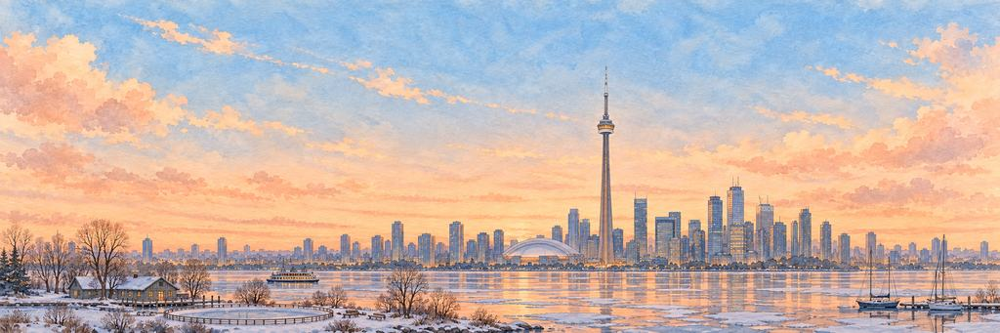

多伦多 纸飞机游戏
第 15 座城市，共 15 座 · 加拿大 · 北美洲
看加拿大国家电视塔在安大略湖上空伸进云里。
先是高楼，然后是开阔的湖面。闯过守门驼鹿，再闯过浣熊。
这座城市
立在水中的树
多伦多这个名字可能来自莫霍克语的 tkaronto，意思是「树木立在水中的地方」。1793 年，英国人在这里建立了约克镇，1834 年它成为多伦多市。如今它是加拿大最大的城市，差不多一半居民出生在别的国家。
“这座城里一半的人来自别的地方。我想问问他们从哪儿来。”
地标加拿大国家电视塔
加拿大国家电视塔建成于 1976 年，用来把电视和广播信号送过城里新盖的摩天大楼。它高 553 米，三十多年里一直是世界上最高的独立式建筑。游客可以站在 342 米高的玻璃地板上，直直地往下看。
两位守护者
谁在守护多伦多的心愿。
精英守护者先醒来，首领守护者守着心愿本身。打中它们的弱点，就是一声「砰！」；最后一击，就是「KO！」。然后它们都会笑着鞠个躬。
-
精英


守门驼鹿
什么都过不了这对角 · 露天冰场的守护者
每年冬天，多伦多都会在公园和广场上灌水，做成露天冰场，孩子们就在上面学滑冰、打冰球。驼鹿是北美洲个子最高的动物：大的驼鹿肩高超过两米，体重可达 700 公斤。
驼鹿穿着护具蹲好，用球杆敲了两下，提前小声说了句对不起。驼鹿的角晃了晃。明明是飞机撞了它，它却说对不起。驼鹿摘下面罩，鞠了一躬，客客气气地挥了挥手。
“我要带上自己的冰球，先说对不起。”
-
首领

浣熊守夜人
全城的盖子都能打开 · 小巷的守护者
多伦多的浣熊多得出名，人们叫它「世界浣熊之都」。浣熊灵巧的爪子能打开门闩和盖子。2016 年，市政府发了带锁盖的新绿色垃圾桶，结果有些浣熊连这种也学会打开了。
浣熊啪地打开手电筒，钥匙串哗啦作响。天黑了还有人在外面。浣熊吓了一跳，钥匙串哗啦啦地响。浣熊把垃圾桶盖像帽子一样举起来，鞠了一躬。
“我会把零食放在口袋里。”